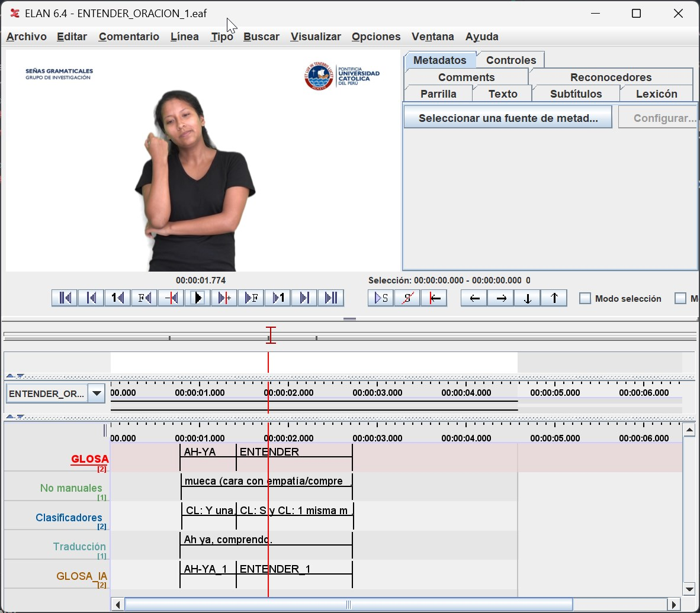
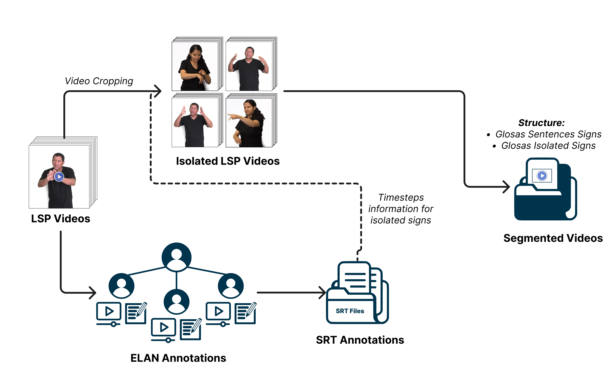

Annotation and Isolating Sign Language Videos#
In this stage, both video preparation and the annotation of signs corresponding to the videos are performed, as shown in the following workflow.
Annotation of Signs#
For the annotation of videos, we utilized the ELAN video annotation tool, where previously agreed-upon glosses for the words described in each example sentence from the PUCP305 database were annotated. The PUCP305 database contains multiple examples of sentences, each containing several signs for different words. The task was to create an Isolated Sign Language (ISL) video database. The annotation of glosses, along with their corresponding timeframes, served as the basis for creating the ISL database, as illustrated in the image below. This task involved meticulous work from the entire linguistic team and the Deaf community to create a dataset that accurately represents how communication occurs within the community, requiring in-depth study to define the signs’ glosses correctly.

Video Preparation#
Video preparation involved using Python scripts for specific preprocessing tasks, divided into three stages: transforming EAF (ELAN files) into SRT files, extracting all videos from the unprocessed database, and then cropping them based on the timeframes indicated in the SRT files to generate each ISL video. Additionally, if needed, cropping was performed to include only the interpreter’s location (used in previous databases, where the interpreter was not centered in the video, and the video contained content besides the interpreter).

Step 1: Transforming ELAN to SRT Files#
The “transformEAFTtoSRT.py” script aims to convert ELAN (EAF) files containing gloss annotations into SubRip (SRT) subtitle files and generate a vocabulary count. The script processes all ELAN files found in a specified folder and its subfolders. It reads the gloss annotations from the ELAN files and creates corresponding SRT subtitle files. The script also counts the occurrences of each gloss annotation and generates a vocabulary count, saving it to a CSV file named ‘glosas.csv’.
Step 2: Video Extraction#
The “move_videos.py” script aims to copy video files referenced in ELAN (EAF) files from their original location to a specific destination folder. The script recursively searches for ELAN files with the ‘.eaf’ extension and, for each file found, locates and copies the associated video file. If the video file is not found at the original location, the script looks for it in the linked media list of the ELAN file and corrects the video’s path if necessary before performing the copy. This script ensures that the videos are correctly organized in the destination folder, which facilitates further processing or analysis. Note that the destination folder is typically located within the PeruvianSignLanguage repository in the following structure:
PeruvianSignLanguage
.
.
.
├── Data
├── PUCP305 [subfolder for PUCP305 database]
│ ├── SRT [subfolder containing SRT files]
│ │ ├── SRT_SEGMENTED_SIGN
│ │ │ ├── ABRIR_1.srt
│ │ │ └── ABRIR_2.srt
│ ├── Videos [subfolder containing mp4 files]
│ │ ├── Original
│ │ │ ├── ABRIR_1.mp4
│ │ │ └── ABRIR_2.mp4
Step 3: Video Segmentation and Cropping#
The video segmentation and cropping process is a critical step for isolating specific segments from the original videos. To achieve this, we have developed the cropInterpreterBySRT.py script.
This script is responsible for segmenting video segments based on annotations provided in SRT files. It extracts temporal information from the SRT files, allowing it to identify the start and end times of each segment of interest.
The script then creates new videos with the timeframes desired for each isolated sign. Users have the flexibility to customize the segmentation, including setting the dimensions of the sign language interpreter (specifying a region of interest for cropping), and adjusting the speed of the segmented videos.
It is important to ensure that the SRT files and corresponding video files are located in the paths specified by “–srtPath” and “–rawVideoPath,” respectively. It is assumed that these files are within the PeruvianSignLanguage repository in the “Data” folder.
For a more detailed guide on using this script and its various options, please refer to the Dictionary LSP Documentation.